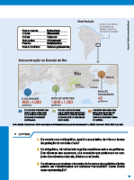
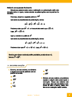
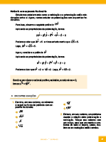

- Cintia Bagatin Lapa
Licenciada em Matemática pela Universidade Federal do Paraná (UFPR). Mestre em engenharia de produção: Mídia e Conhecimento pela Universidade Federal de Santa Catarina (UFSC). Professora do Ensino Superior, tendo lecionado muitos anos nos ensinos Fundamental e Médio. Assessora editorial, prestando consultoria para diversas editoras na edição de conteúdo de matemática voltado para os ensinos Fundamental e Médio.
Curitiba, 2022 • 2.a edição
©COPYRIGHT - 2022 - Terra Sul Editora Eireli. É proibida a reprodução, mesmo parcial, por qualquer processo eletrônico, reprográfico, etc., sem autorização por escrito da autora e da editora.
Dados internacionais de catalogação na publicação
Bibliotecária responsável: Natália Vicente Montanha Teixeira (CRB-9/1642>
Lapa, Cintia Bagatin.
Matemática : contexto e prática : 8º ano : livro do estudante / Cintia Bagatin Lapa ; ilustradores : Reinaldo Rosa e Sérgio Bonfim dos Santos. – 2. ed. – Curitiba, PR : Terra Sul Editora, 2022.
240 p. : il. ; 28 cm.
ISBN 978-65-5645-200-5
Livro digital-interativo do estudante
1. Matemática (Ensino fundamental) – Estudo e ensino. I. Rosa, Reinaldo. II. Santos, Sérgio Bonfim dos. III. Título.
CDD (22ª ed.)
372.7
Jane Gonçalves
ILUSTRAÇÃOReinaldo Rosa
Sérgio Bonfim dos Santos
CONSULTORIAAna Paula Gugelmin
ICONOGRAFIARaquel Deliberali
Victor Kubis
Ariane Roldan Melchior
Eliane Peixoto de Lima
Silmara Lídia Moraes Arcoverde
Sônia Maria Duarte
Thais dos Santos Pires
EDITORAÇÃO ELETRÔNICAMárcio Guesser
CARTOGRAFIAElisabeth Gislaine Rathunde Lopes
IMPRESSÃORua Ricardo Beltrami, 82 • Bom Retiro
CEP 80520-570 • Curitiba • PR • Brasil
Fone/Fax: (41) 3253-0077
E-mail: terrasul@terrasuleditora.com.br
Apresentação
Prezado aluno
Esta coleção foi escrita para auxiliá-lo a descobrir como a Matemática pode ser significativa e também prazerosa no seu dia a dia. ................................................
Trata-se de uma ciência que nos ajuda a desenvolver o raciocínio e a fazer descobertas, levando-nos a entender melhor o mundo em que vivemos.
Pensando em atender suas expectativas e curiosidades, convido-o a participar desta aventura, para que você possa ampliar o seu conhecimento sobre os números, as operações, as formas geométricas, as medidas e tantas outras informações que encontrará nas páginas deste livro.
Atente-se às orientações do seu professor, concentre-se nas aulas e resolva as atividades. Dessa forma, você perceberá o quão gratificante é o aprender!
Bom estudo!
................................................................................................................................................................................................................................................................................................................................................................................................................................................................................................
A autora
Conheça as seções do seu livro
Converse
Na abertura das unidades apresentamos textos e imagens que remetem aos assuntos que serão estudados. Convidamos você a conversar um pouco sobre estes temas para saber qual o seu conhecimento prévio sobre os conceitos que serão estudados.
Encontre soluções
Nesta seção serão apresentadas atividades variadas para serem resolvidas e jogos sobre os conceitos que estão sendo estudados.
 

Probabilidade e estatística
Esta seção trata da interpretação e análise de dados em várias formas de apresentação, como gráficos e tabelas.


Relembre
Seção que finaliza a unidade. Nesta seção, você poderá verificar, por meio de atividades, se os conceitos estudados na unidade foram assimilados.


Glossário
Encontra-se no final do livro e contém vocábulos que podem ser desconhecidos, com as suas significações no contexto estudado. Essas palavras encontram-se sublinhadas no decorrer do livro.

Conheça os ícones

Troca de ideias
Neste ícone você será convidado a trocar ideias com seus colegas e professor sobre questões que estão sendo propostas no início do estudo de um determinado conceito. Neste momento, é possível criar estratégias próprias ou utilizar as convencionais, desenvolvendo a imaginação, a criatividade e a capacidade de comunicar claramente suas conclusões; fazer estimativas mentais de resultados ou cálculos aproximados.
Em duplas
São atividades que apresentam situações nas quais se propõe que sejam resolvidas em duplas.
Calculadora
Este ícone sugere que seja usada uma calculadora para resolver a situação proposta.
Calcule mentalmente
São apresentadas situações em que se sugere que o cálculo seja realizado mentalmente.
Desafio
Neste ícone você encontrará atividades da Olimpíada Brasileira de Matemática, podendo ser da OBMEP – Olimpíada Brasileira de Matemática das Escolas Públicas ou da OBM – Olimpíada Brasileira de Matemática.
Jogos
Este ícone indica que é um momento para jogar. Por meio do jogo, pretende-se o desenvolvimento simultâneo da capacidade cognitiva, de raciocínio, de memória, entre outras, e você aprende brincando. Convide um colega e bom divertimento!
Sumário
-
UNIDADE 1 - Conjuntos numéricos............................................................10
CAPÍTULO 1 – Ampliando o estudo sobre os números naturais, inteiros e racionais................................................12
Conjuntos dos números naturais, inteiros e racionais................................................12
Fração geratriz................................................16
CAPÍTULO 2 – Potenciação e propriedades................................................19
Expoente inteiro................................................19
Propriedades da potenciação................................................20
CAPÍTULO 3 – Potências e raízes................................................24
Potências de base 10................................................24
Notação científica................................................25
Números quadrados perfeitos................................................27
Raiz quadrada exata................................................27
Raízes não exatas................................................30
Probabilidade e estatística – Porcentagem................................................32
Relembre................................................33
Retas e ângulos............................................................................34
CAPÍTULO 1 – Construções geométricas................................................36
Retas paralelas................................................36
Retas perpendiculares................................................38
Ponto médio e mediatriz de um segmento................................................39
CAPÍTULO 2 – Ângulos................................................41
Recordando ângulos................................................41
CAPÍTULO 3 – Transformações geométricas................................................46
Probabilidade e estatística – Planejando e executando
uma pesquisa amostral................................................52
Relembre................................................54
Monômios e polinômios...................................................56
CAPÍTULO 1 – Expressões algébricas................................................58
Valor numérico de uma expressão algébrica................................................58
CAPÍTULO 2 – Monômios................................................61
Grau de um monômio................................................61
Monômios semelhantes................................................62
Operações com monômios................................................62
CAPÍTULO 3 – Polinômios................................................67
Redução de termos semelhantes................................................67
Grau de um polinômio................................................68
Operações com polinômios................................................68
CAPÍTULO 4 – Sequências................................................73
Probabilidade e estatística – Interpretação e construção de gráficos................................................76
Relembre................................................79
Medidas de superfície e de volume..................80
CAPÍTULO 1 – Cálculo da área de figuras planas................................................82
CAPÍTULO 2 – Cálculo do volume de sólidos geométricos................................................90
Probabilidade e estatística – Variáveis em pesquisas................................................95
Relembre................................................97
Ângulos e diagonais de um polígono..............100
CAPÍTULO 1 – Ângulos de um polígono................................................102
Soma das medidas dos ângulos internos de um polígono................................................102
Soma das medidas dos ângulos externos de um polígono................................................107
CAPÍTULO 2 – Número de diagonais de um polígono convexo................................................111
Probabilidade e estatística – Medidas de tendência central e de dispersão................................................114
Relembre................................................116
Frações algébricas e equações...............................118
CAPÍTULO 1 – Frações algébricas................................................120
Simplificação de frações algébricas................................................121
CAPÍTULO 2 – Operações com frações algébricas................................................124
Mínimo múltiplo comum entre polinômios................................................124
Adição e subtração com frações algébricas................................................127
Multiplicação e divisão com frações algébricas................................................129
CAPÍTULO 3 – Equações................................................132
Equações do 1.o grau................................................132
Equações fracionárias com uma incógnita................................................134
Equações literais................................................137
Equações do 1.o grau com 2 incógnitas................................................139
CAPÍTULO 4 – Proporcionalidade................................................142
Representação gráfica................................................144
Probabilidade e estatística – Interpretação de gráficos................................................147
Relembre................................................151
Triângulos e quadriláteros............................................154
CAPÍTULO 1 – Triângulos................................................156
Elementos e classificação dos triângulos................................................156
Condição de existência de um triângulo................................................157
Soma das medidas dos ângulos internos de um triângulo................................................158
Relação entre a medida de um ângulo externo e as medidas de
dois ângulos internos não adjacentes a ele................................................158
Bissetrizes e incentro................................................162
Alturas e ortocentro................................................165
Medianas e baricentro................................................167
Mediatrizes e circuncentro................................................169
Casos de congruência de triângulos................................................171
CAPÍTULO 2 – Quadriláteros................................................176
Elementos e classificação dos quadriláteros................................................176
Propriedades dos paralelogramos................................................180
Propriedades dos trapézios isósceles................................................183
Probabilidade e estatística – Tabela de frequências................................................184
Relembre................................................186
Sistemas e equações............................................................188
CAPÍTULO 1 – Equações com duas incógnitas................................................190
CAPÍTULO 2 – Sistemas de equações................................................192
Sistemas de equações do 1.º grau com duas incógnitas................................................192
Método da substituição................................................193
Método da adição................................................196
CAPÍTULO 3 – Equações................................................201
Equações do 2.o grau na forma reduzida................................................201
Resolução de equações incompletas do 2.o grau................................................203
Probabilidade e estatística – Princípio multiplicativo ou princípio
fundamental da contagem................................................206 Relembre................................................209 Circunferência e círculo....................................................210 CAPÍTULO 1 – Relembrando circunferência e círculo................................................212 CAPÍTULO 2 – Posições relativas................................................215 Posições relativas entre duas circunferências................................................215 Posições relativas entre uma reta e uma circunferência................................................217 CAPÍTULO 3 – Arco e ângulo central................................................220 Arco de circunferência................................................220 Ângulo central................................................220 Ângulo inscrito................................................222 Probabilidade e estatística – Probabilidade de um evento ocorrer................................................225 Relembre................................................227 Glossário228 Referências229 Sugestões de leitura230 Respostas das atividades231